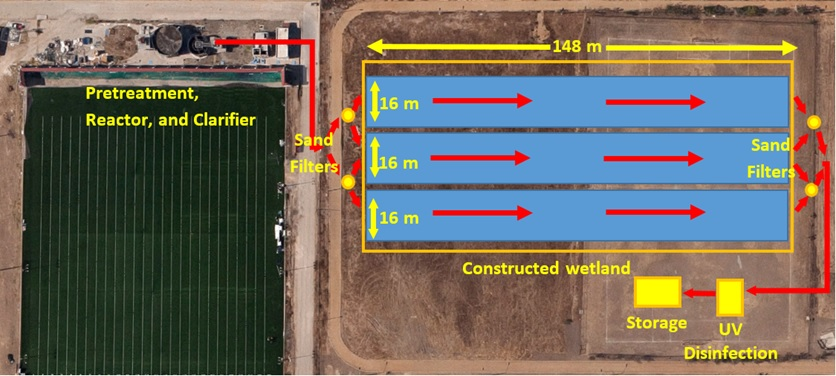

Senior design project - Wastewater treatment facility at the Universidad Autonoma de Baja California, Tijuana, Mexico

07/20/2015
Myself as well as four other colleagues worked on upgrading a waste water treatment facility which is located in the Autonomous University of Baja California (UABC) in Tijuana, Mexico. The need for the university to upgrade was to use the effluent treated water for irrigation. Currently the effluent does not meet the mexican daily standards for nitrate concentration.
It was a great project in which I had the opportunity to attend and visit the campus as well as collaborate with the mexican counterparts in the project.
The current design of the project consisted on a pre-treatment screen, a biological reactor, a clarifier and a storage building.

Current design of treatment facility

Final proposed plan design of treatment facility
The final plan includes:Final proposed plan design of treatment facility
∙Four sand filters
∙Wetland
∙UV Desinfection system
∙Storage building
Our solution to our problem would be the construction of a weland. This wetland will be located east of the current design facility. The design would consist of the addition of sand filters before and after the wetland for reduction of total suspended solids (TSS). Continuing after the wetland we will have a UV disinfection and a storage. The design was done with the advice of the university to accomodate for preferences.
Proposed constructed wetland
∙Fully vegetated to minimize sunlight and reaeration: this provides anoxic environment for denitrifying bacteria. Limiting sunlight prevents algae growth
∙Important to distribute influent evenly; manifolds are used in each cell
∙Effluent collected using v-notch weirs
∙Retention time: 8 days
∙Three cells to minimize short-circuiting by simulating a plug flow profile
∙37-75% nitrate removal estimated from a hydraulic loading rate of 2400 m3/ha-d
∙Even at a minimum of 37%, this will produce a satisfactory effluent for irrigation reuse, only 17% removal needed
∙Important to distribute influent evenly; manifolds are used in each cell
∙Effluent collected using v-notch weirs
∙Retention time: 8 days
∙Three cells to minimize short-circuiting by simulating a plug flow profile
∙37-75% nitrate removal estimated from a hydraulic loading rate of 2400 m3/ha-d
∙Even at a minimum of 37%, this will produce a satisfactory effluent for irrigation reuse, only 17% removal needed